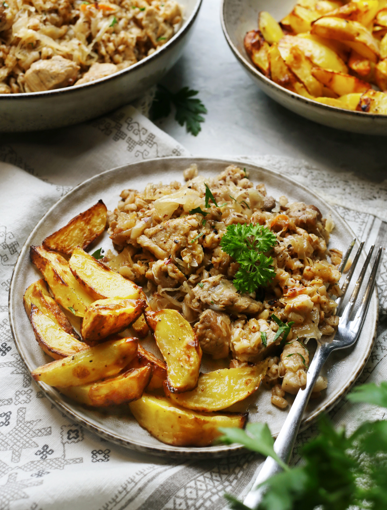

Отличное сытное и согревающее в холодное время года блюдо, которое готовится из свинины, квашеной капусты и перловой или ячневой крупы. Родом мульгикапсад из области Мульгимаа в Эстонии, постепенно оно распространилось по всей территории страны и стало национальной гордостью. И это действительно очень вкусно. Перловка — прекрасная крупа, но часто недооцененная. К сожалению, в российских магазинах она попадается не всегда хорошо очищенной, поэтому ее следует тщательно промыть. Хотя и сама по себе перловка любит водные процедуры и длительное замачивание, после которого набухает, светлеет и затем готовится гораздо быстрее. Количество соли в блюде лучше регулировать по вкусу, как и кислоту, которую дает квашеная капуста. Если она слишком кислая, можно слегка отжать ее от рассола и в процессе приготовления добавить немного сахара. Вкус квашеной капусты хорошо оттеняют майоран и тмин.